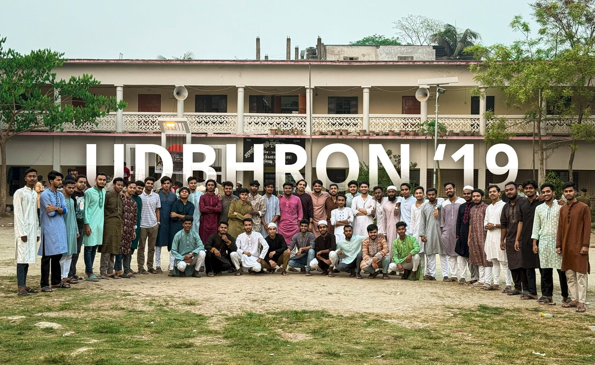
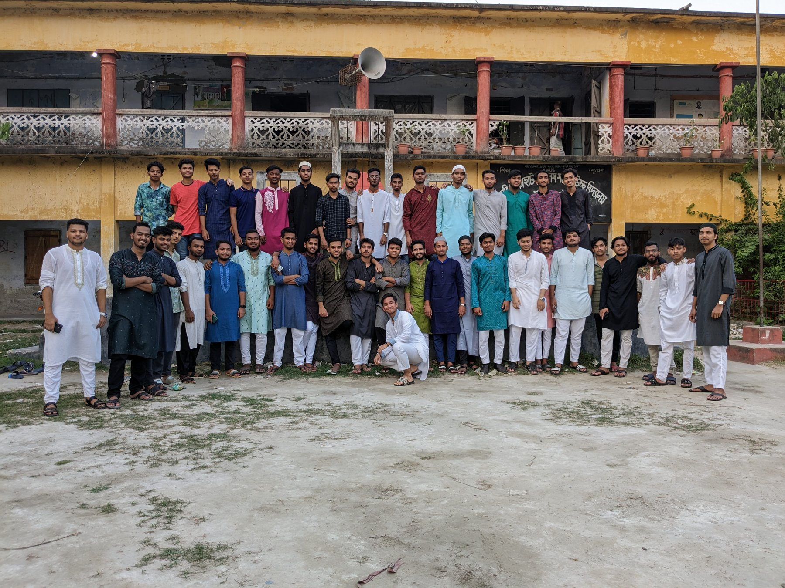
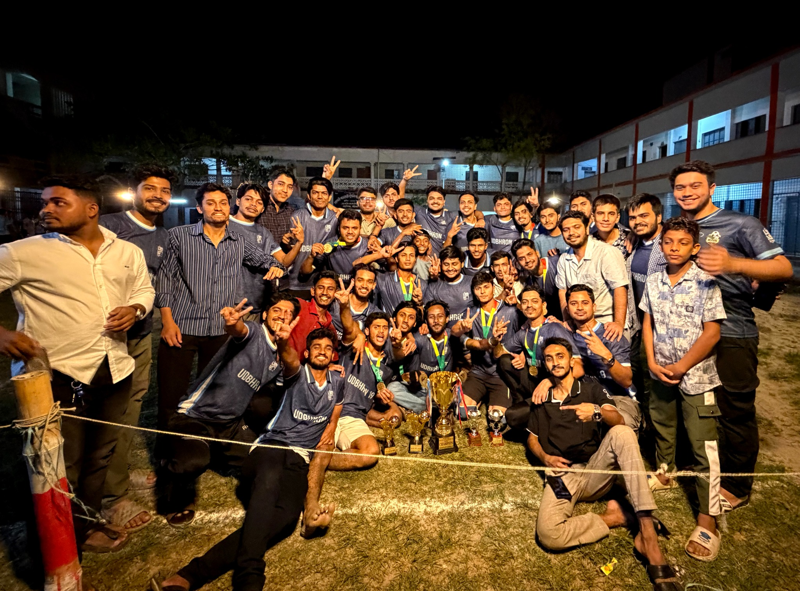
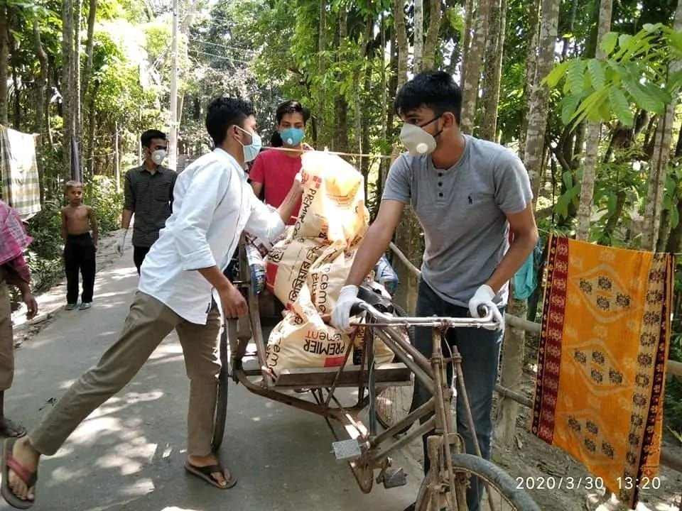
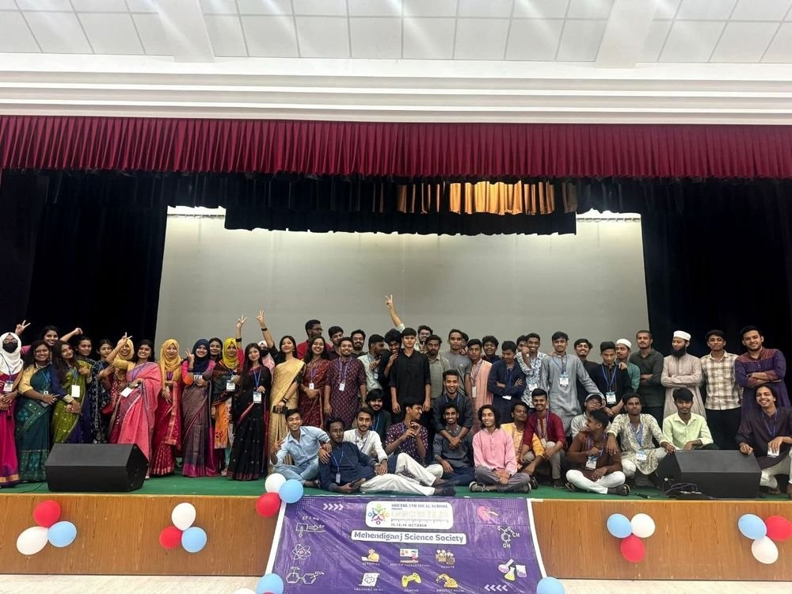
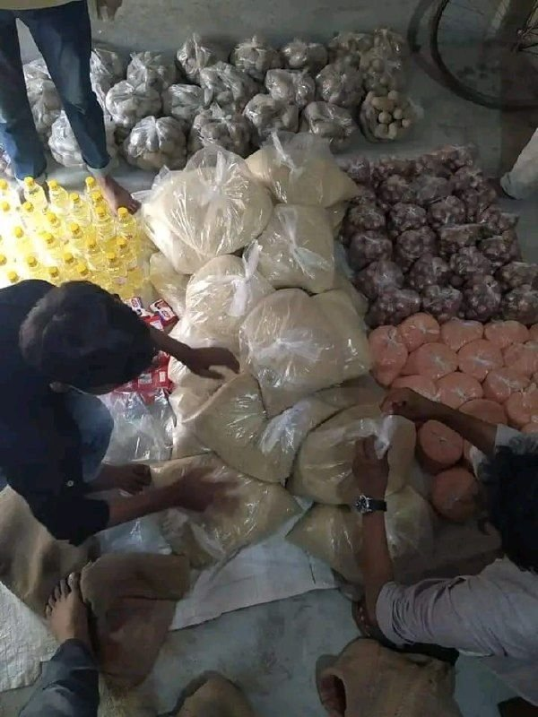
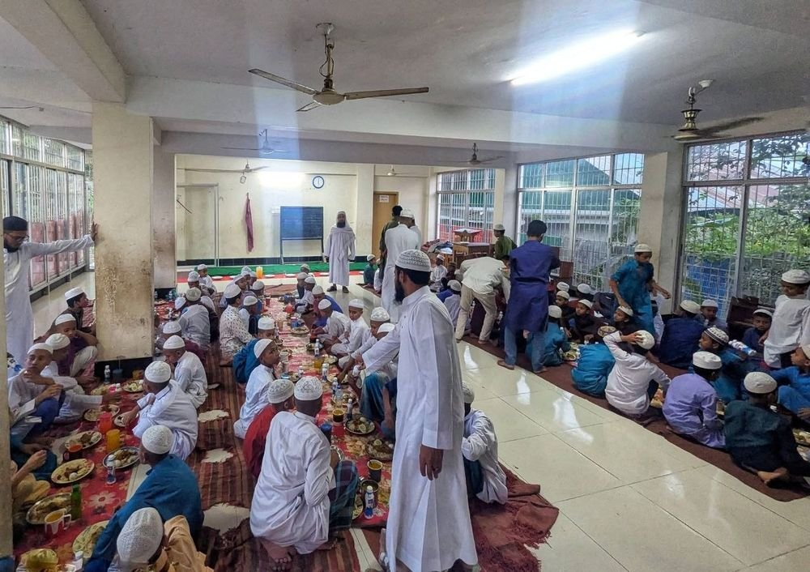
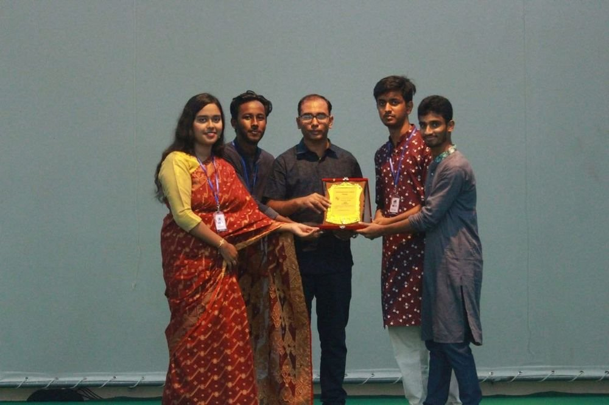

ACADEMIC JOURNEY
আমাদের অর্জন
জেএসসি ও এসএসসি তে মেহেন্দিগঞ্জের সেরা সাফল্য অর্জন করে আমাদের ১৯ ব্যাচ


জেএসসি ও এসএসসি তে মেহেন্দিগঞ্জের সেরা সাফল্য অর্জন করে আমাদের ১৯ ব্যাচ
ত্রাণ কার্যক্রম, ইফতার আয়োজন ও শিক্ষার্থীদের প্রয়োজনে এবং মানুষের পাশে সর্বদা উদ্ভোরণ ’১৯ আছে এবং থাকবে
Loading members…
বন্ধন থেকে দায়িত্বের পথে, একসাথে এগিয়ে চলা।
১৯ ব্যাচের হাত ধরে ২০২২ সালে প্রতিষ্ঠিত হয় Mehendiganj Student Society (MSS)। মেহেন্দিগঞ্জের স্কুল ও কলেজ শিক্ষার্থীদের মেধা বিকাশে এবং সৃজনশীল চিন্তার উন্নয়নে কাজ করছে এই সংগঠন।

উদ্ভোরণ ’১৯ সব সময় যেকোনো ধরনের খেলাধুলার সঙ্গে সম্পৃক্ত থাকে। নিয়মিত ক্রিকেট ও ফুটবল টুর্নামেন্টে অংশগ্রহণ করে এবং Intra-School Football Tournament 2026-এ চ্যাম্পিয়ন হওয়ার গৌরব অর্জন করে।
বন্ধুত্বের পাশাপাশি, আমাদের ব্যাচ সবসময় সেবার পক্ষে দাঁড়িয়েছে।

করোনা মহামারীর সময় অসহায় মানুষদের জন্য আমরা তহবিল সংগ্রহ করে ত্রাণ বিতরণ করি।
প্রতি বছর আমরা স্থানীয় একটি মাদ্রাসার এতিম শিক্ষার্থীদের জন্য ইফতার মাহফিলের আয়োজন করি।
১৯ ব্যাচের হাত ধরে ২০২২ সালে প্রতিষ্ঠিত হয় Mehendiganj Student Society (MSS)। মেহেন্দিগঞ্জের স্কুল ও কলেজ শিক্ষার্থীদের মেধা বিকাশে এবং সৃজনশীল চিন্তার উন্নয়নে কাজ করছে এই সংগঠন।

MSS এর বার্ষিক আয়োজন হিসেবে ১৯ ব্যাচ সর্বপ্রথম 2024 সালে আয়োজন করে INNOVATE 24
সামাজিক কার্যক্রম

করোনাকালীন সহায়তা
২০২০ সালে দেশে করোনা মহামারী দেখা দিলে ত্রাণ সংগ্রহ ও বিতরণের মাধ্যমে মেহেন্দিগঞ্জে অসহায় মানুষের পাশে সর্বপ্রথম সাহায্যের হাত বাড়িয়ে দেয় ১৯ ব্যাচ

ইফতার মাহফিল
প্রতি বছর স্থানীয় মাদ্রাসার এতিম শিক্ষার্থীদের জন্য ইফতার মাহফিল আয়োজন করা হয়

শিক্ষার্থীদের পাশে ১৯
২০২২ সালে উদ্ভোরণ ’১৯-এর হাত ধরে প্রতিষ্ঠিত হয় মেহেন্দিগঞ্জ স্টুডেন্ট সোসাইটি (MSS)। এছাড়াও বিভিন্ন সময়ে আর্থিকভাবে অসচ্ছল শিক্ষার্থীদের আমাদের ব্যাচের পক্ষ থেকে বিভিন্নভাবে সহযোগিতা করা হয়।